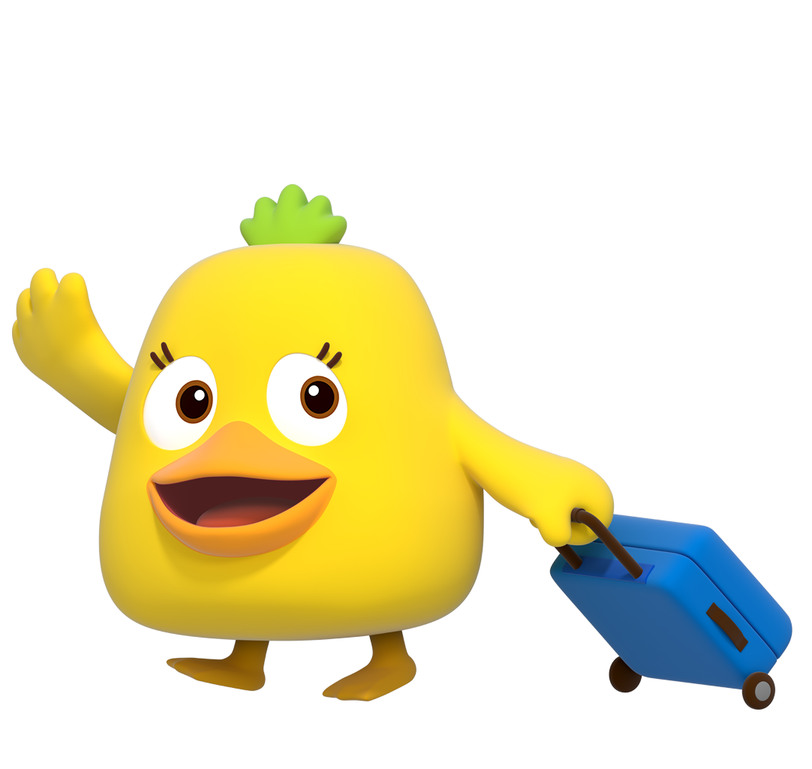

어쨌든 매우매우 좋아서 매우매우 좋아서어쨌든 매우매우 좋아서 매우매우 좋아서어쨌든 매우매우 좋아서 매우매우 좋아서 좋아요.
투자 성향에 맞는 포트폴리오를 꾸준히 잘 유지하고 있어요.
투자자산 비중이 높아지고 있어요. 목표 비중에 맞게 조정해보세요.
김농협님의 예·적금은 전체 자산 대비 비중이 높은 편으로, 금리 변동기에는 분산도 함께 고려해보시는 걸 추천드려요.
어쨌든 매우매우 좋아서 매우매우 좋아서어쨌든 매우매우 좋아서 매우매우 좋아서어쨌든 매우매우 좋아서 매우매우 좋아서 좋아요.
투자 성향에 맞는 포트폴리오를 꾸준히 잘 유지하고 있어요.
투자자산 비중이 높아지고 있어요. 목표 비중에 맞게 조정해보세요.
김*협님의 포트폴리오는 국내주식 22%(반도체 직접보유 포함)로 상승 모멘텀 직접 수혜 구간에 있으나, 동시에 국내·해외채권 35%, 해외주식형 18%로 금리 상승 및 유가 변동성 노출도 상당합니다.
나의 투자 스타일은?
AI전문가가 분석한 내 투자스타일을
알려드려요!
천진난만한 활동가
어쨌든 매우매우 좋아서 매우매우 좋아서어쨌든 매우매우 좋아서 매우매우 좋아서어쨌든 매우매우 좋아서 매우매우 좋아서 좋아요.
노후준비를 위한 연금 계획을 꾸준히 잘 유지하고 있어요.
퇴직연금이 적어요. 개인 연금 저축으로 꾸준히 모아보세요. 모아놓은 돈은 소득이 발생할 수 있는 형태로 바꿔보세요.
김농협
님의 은퇴준비율은
32%
입니다.

신용대출을 상환하여 대출액이 줄었어요, 또한 또래에 비해 대출액이 매우 적어요. 노후 준비를 위해 대출 상환을 완료한 후 ETF 상품에도 관심을 가져보시는 것을 추천드려요.
대출 상환 계획을 꾸준히 잘 유지하고 있어요.
대출 상환을 잘 하고 있어요! 포트폴리오 진단을 기반으로 대출 금액을 줄여보세요.